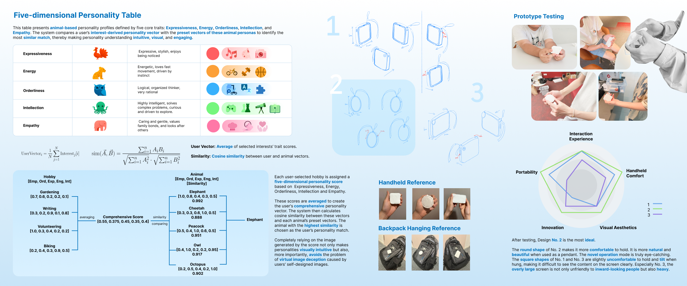
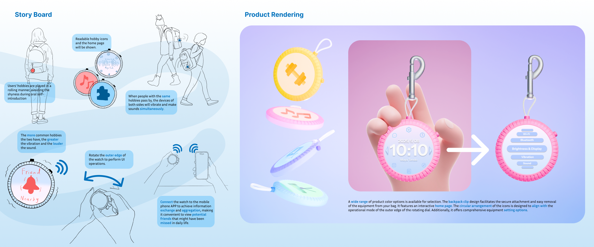
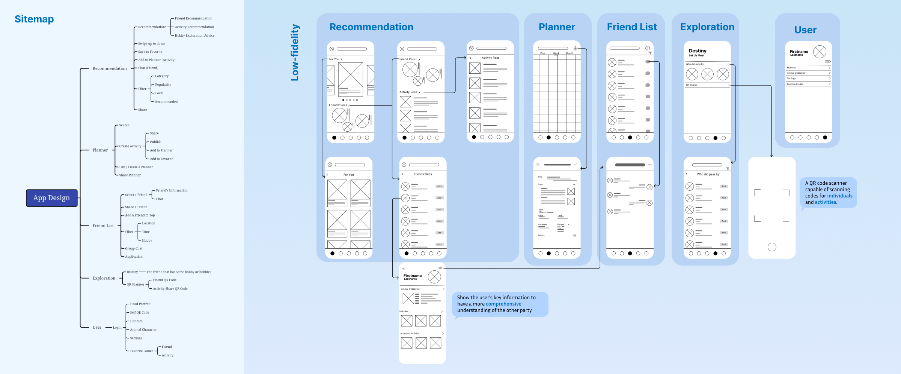
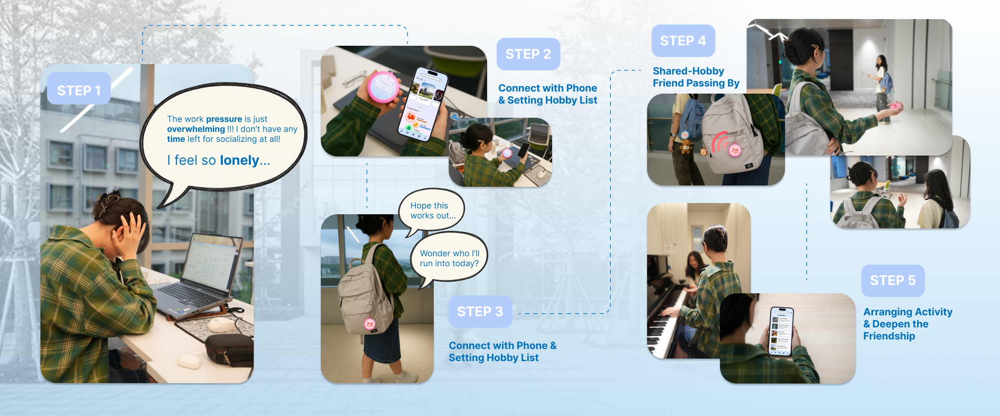

How can an interaction make the first step toward friendship feel more manageable?
Understanding the social situation
I combined interviews and surveys with secondary research to investigate friendship difficulties among international college students. The portfolio identifies limited social opportunities, language barriers, pressure around strangers, and difficulty finding like-minded people as design concerns.
The design question emerged from the gap between being surrounded by peers and having a comfortable way to approach them. Interviews, surveys and secondary research helped identify barriers such as limited opportunities, language differences and difficulty discovering shared interests. I translated these findings into a low-pressure interaction concept rather than assuming that students simply need more notifications or a larger contact list.

Connecting people through interests
The concept uses a five-dimensional interest taxonomy to structure preferences and support matching. It explores non-face-to-face interaction as a gentler entry point for users who may find direct approaches difficult. The taxonomy is a design mechanism, not a validated psychological assessment or a proven matching algorithm.
The portfolio represents interests using five design dimensions: expressiveness, energy, orderliness, intellection and empathy. Selected interests contribute scores that are averaged into a user vector; cosine similarity then relates this vector to preset animal profiles. This makes an otherwise abstract preference representation visible and playful. It is an original design taxonomy, not the same construct as the OCEAN personality model and not a validated assessment of personality.

From physical form to interaction scenario
Sketches and physical models explored how the device could be held, carried, and attached to a bag. Prototype testing considered hand feel, portability, and interaction naturalness. Storyboards illustrate how the device could signal a shared interest and help begin an encounter; these remain proposed usage scenarios.
I compared round and rectangular forms through sketches, handheld models and prototype feedback on portability, comfort, appearance and interaction. The round version better supported the intended pendant-like form and rotary-edge interaction. The storyboard proposes cycling hobby icons and signaling nearby shared interests through vibration and sound. These are proposed product behaviors; the renderings do not establish that a deployed device already performs social matching.

Building the accompanying app
The design moves from a sitemap and low-fidelity wireframes to high-fidelity interface screens. Recommendations, planning, a friend list, exploration, and a personal profile connect discovery with possible shared activities. The portfolio contains design renderings and prototypes, not evidence of a deployed matching service.
The app information architecture connects recommendations, planning, a friend list, exploration and a personal profile. A user could review a missed encounter, inspect shared interests and move toward an activity rather than being pushed immediately into a conversation. The wireframes make those transitions inspectable before high-fidelity visual design. The accompanying illustrated journey shows how the physical and digital touchpoints could work together over time.

What the project contributes
This project brings user research, an interaction concept, and physical/digital prototyping into one design process. It investigates ways to support friendship formation without claiming that the concept has already reduced loneliness or improved long-term social outcomes.
The contribution is the integration of user research, a legible preference representation, physical form exploration and a supporting app journey. Prototype feedback informed interaction and form choices, but there is no longitudinal evidence of reduced loneliness. The next evaluation would need to separate comfort using the device from the quality and persistence of the relationships it helps initiate.
Materials & scope
Original Figma design exports supplied by the project author, the product-design portfolio, and latest CV. Research participants’ interview profiles are not reproduced.